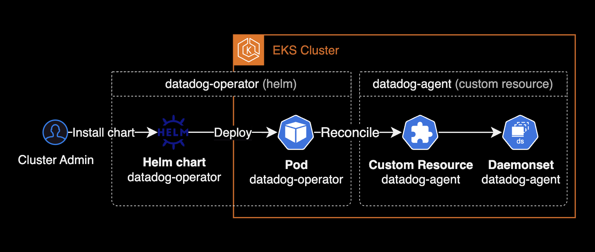

datadog-operator
개요
헬름 차트를 사용하여 datadog-operator를 설치하고 쿠버네티스 클러스터에 datadog-agent 데몬셋을 배포하는 가이드입니다.

배경지식
datadog-agent의 설치 방식
데이터독 에이전트를 Amazon EKS 클러스터에 설치할 때 지원하는 주요 설치 방식은 크게 2가지입니다.
- Helm 차트 사용: Helm을 사용하여 데이터독 에이전트를 설치합니다. Helm 차트는 Kubernetes 애플리케이션을 정의, 설치 및 업그레이드하는 패키지 매니저입니다.
- Datadog Operator 사용: Kubernetes Operator를 사용하여 데이터독 에이전트를 설치합니다. Operator는 애플리케이션의 배포 및 관리를 자동화하는 Kubernetes의 패턴입니다.
Datadog Operator와 Helm 차트를 사용한 Datadog Agent 설치 비교표:
| 항목 | Datadog Operator 사용 | Helm 차트 사용 |
|---|---|---|
| 설치 방법 | Kubernetes Operator 설치 후 CRDCustom Resource Definition 사용 | Helm 차트를 사용한 명령어 실행 |
| 설정의 유연성 | CRD 를 사용하여 세밀한 설정 가능 | Helm 의 values 파일을 통해 설정 |
| 자동화 수준 | Operator가 자동으로 애플리케이션 상태 관리 | Helm으로 설치/업데이트를 수동으로 수행 |
| 사용 편의성 | Kubernetes 리소스와 통합되어 사용이 쉬움 | Helm을 사용한 직관적인 설치 과정 |
| 업데이트 관리 | Operator가 자동으로 업데이트 처리 가능 | Helm을 사용하여 수동으로 업데이트 수행 |
| 확장성 | Operator가 애플리케이션 상태를 모니터링하고 자동으로 조정 | Helm으로 설치된 리소스를 수동으로 조정 |
| 복잡성 | 초기 설정이 다소 복잡할 수 있음 | 비교적 간단하게 설치 가능 |
| 커뮤니티 지원 | Operator 기반 설치에 대한 문서와 커뮤니티 지원이 다소 제한적일 수 있음 | Helm 차트에 대한 방대한 문서와 커뮤니티 지원 |
| 에이전트 관리 기능 | 에이전트의 라이프사이클 관리 및 자동 복구 기능 포함 | 에이전트의 설치 및 업그레이드에 중점 |
| 리소스 요구 사항 | Operator 자체가 추가적인 리소스를 소비 | 추가적인 리소스 소비는 적음 |
설치하기
datadog-operator 설치
datadog-operator 공식 헬름 차트를 사용하여 클러스터에 Datadog Operator를 배포합니다.
helm repo add datadog https://helm.datadoghq.com
helm install datadog-operator datadog/datadog-operator \
--namespace datadog \
--create-namespace
Operator 구성을 사용자 정의하려면 기본 Helm 차트 값을 재정의할 수 있는 value.yaml 파일을 생성합니다.
데이터독 오퍼레이터는 아래 3개의 커스텀 리소스를 관리합니다.
$ kubectl api-resources --api-group datadoghq.com
NAME SHORTNAMES APIVERSION NAMESPACED KIND
datadogagents dd datadoghq.com/v2alpha1 true DatadogAgent
datadogmetrics datadoghq.com/v1alpha1 true DatadogMetric
datadogmonitors datadoghq.com/v1alpha1 true DatadogMonitor
여기서 중요도 높은 커스텀 리소스는 datadogagent 입니다.
Datadog Operator가 관리하는 datadogagent 커스텀 리소스는 Datadog 에이전트의 설치, 설정, 업데이트를 자동화합니다. 이를 통해 Kubernetes 클러스터 내에서 Datadog 에이전트의 배포와 운영을 간편하게 관리할 수 있습니다.
datadog-agent 설치
Datadog 어드민 페이지에서 생성한 API Key, App Key를 보관할 Kubernetes Secret 리소스를 생성합니다.
DD_API_KEY=<YOUR_API_KEY>
DD_APP_KEY=<YOUR_APP_KEY>
kubectl create secret generic datadog-secret \
--namespace datadog \
--from-literal api-key=${DD_API_KEY} \
--from-literal app-key=${DD_APP_KEY}
Datadog Agent에서 메트릭과 이벤트를 Datadog으로 전송하려면 API 키가 반드시 필요합니다.
datadogagent 리소스 YAML 파일을 작성합니다.
# datadog-agent resource (datadog-agent.yaml)
apiVersion: datadoghq.com/v2alpha1
kind: DatadogAgent
metadata:
name: datadog
namespace: datadog
spec:
# Credentials to communicate between:
# * Agents and Datadog (API/APP key)
# * Node Agent and Cluster Agent (Token)
global:
clusterName: <KUBERNETES_CLUSTER_NAME>
credentials:
apiSecret:
secretName: datadog-secret
keyName: api-key
appSecret:
secretName: datadog-secret
keyName: app-key
override:
# Node Agent configuration
nodeAgent:
tolerations:
- operator: Exists
# Cluster Agent configuration
clusterAgent:
replicas: 2
features:
clusterChecks:
enabled: true
datadogagent 리소스에서 설정 가능한 spec은 datadog-operator의 All configuration options 페이지를 확인합니다.
데이터독 에이전트 리소스를 배포합니다. 기본적으로 데이터독 클러스터 에이전트는 데이터독 에이전트와 함께 배포됩니다.
kubectl apply -f datadog-agent.yaml -n datadog
기존에 taint가 걸려있는 워커노드에도 datadog-agent 파드를 동일하게 배포하기 위해 tolerations 값을 override 합니다.
apiVersion: datadoghq.com/v2alpha1
kind: DatadogAgent
...
spec:
template:
spec:
tolerations:
- operator: Exists
데이터독 클러스터 에이전트는 데이터독 에이전트에 포함되어 있습니다. 데이터독 에이전트 데몬셋 파드의 배포 상태를 확인합니다.
$ kubectl get pod,datadogagent -n datadog
NAME READY STATUS RESTARTS AGE
pod/datadog-agent-2bdws 3/3 Running 0 36m
pod/datadog-agent-5f7g9 3/3 Running 0 38m
pod/datadog-agent-74pbj 3/3 Running 0 35m
pod/datadog-agent-8bmj6 3/3 Running 0 38m
pod/datadog-agent-97fs5 3/3 Running 0 37m
pod/datadog-agent-ltbqd 3/3 Running 0 37m
pod/datadog-agent-m2xrf 3/3 Running 0 36m
pod/datadog-agent-zb6bp 3/3 Running 0 35m
pod/datadog-cluster-agent-6789ff4c77-qz7wc 1/1 Running 0 24s
pod/datadog-cluster-agent-6789ff4c77-tv8jl 1/1 Running 0 22s
pod/datadog-operator-786f67b996-xj4bx 1/1 Running 0 20s
NAME AGENT CLUSTER-AGENT CLUSTER-CHECKS-RUNNER AGE
datadogagent.datadoghq.com/datadog Running (8/8/8) Running (2/2/2) 39m
참고자료
datadog-operator
datadog-operator github
All configuration options